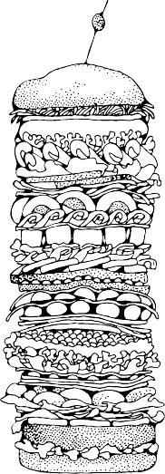

Of course, reality is more complicated than that. The first generation of web servers (and I’m talking web servers from 1993)
didn’t send the Content-Type header because it didn’t exist yet. (It wasn’t invented until 1994.) For compatibility reasons that
date all the way back to 1993, some popular web browsers will ignore the Content-Type header under certain circumstances.
(This is called content sniffing.
) But as a general rule of thumb, everything you’ve ever looked at on the web — HTML
pages, images, scripts, videos, PDFs, anything with a URL — has been served to you with a specific MIME type in the
Content-Type header.
Tuck that under your hat. We’ll come back to it.
-
On February 25, 1993, Marc Andreessen wrote:
I’d like to propose a new, optional HTML tag:
IMG
Required argument is SRC=url
.
This names a bitmap or pixmap file for the browser to attempt to pull over the network and interpret as an image,
to be embedded in the text at the point of the tag’s occurrence.
An example is:
<IMG SRC=file://foobar.com/foo/bar/blargh.xbm
>
(There is no closing tag; this is just a standalone tag.)
This tag can be embedded in an anchor like anything else; when that happens, it becomes an icon that’s sensitive
to activation just like a regular text anchor.
Browsers should be afforded flexibility as to which image formats they support. Xbm and Xpm are good ones to
support, for example. If a browser cannot interpret a given format, it can do whatever it wants instead (X Mosaic
will pop up a default bitmap as a placeholder).
This is required functionality for X Mosaic; we have this working, and we’ll at least be using it internally. I’m
certainly open to suggestions as to how this should be handled within HTML; if you have a better idea than what
I’m presenting now, please let me know. I know this is hazy wrt image format, but I don’t see an alternative than
to just say let the browser do what it can
and wait for the perfect solution to come along (MIME, someday,
maybe).
-
Xbm and Xpm were popular graphics formats on Unix systems.
-
Mosaic
was one of the earliest web browsers. (X Mosaic
was the version that ran on Unix systems.) When he wrote this
message in early 1993, Marc Andreessen had not yet founded the company that made him famous, Mosaic Communications
Corporation, nor had he started work on that company’s flagship product, Mosaic Netscape.
(You may know them better by
their later names, Netscape Corporation
and Netscape Navigator.
)
-
MIME, someday, maybe
is a reference to content negotiation, a feature of HTTP where a client (like a web browser) tells
the server (like a web server) what types of resources it supports (like image/jpeg) so the server can return something in the
client’s preferred format. The Original HTTP as defined in 1991 (the only version that was implemented in February 1993) did
not have a way for clients to tell servers what kinds of images they supported, thus the design dilemma that Marc faced.
-
A few hours later, Tony Johnson replied:
I have something very similar in Midas 2.0 (in use here at SLAC, and due for public release any week now), except
that all the names are different, and it has an extra argument NAME=name
. It has almost exactly the same
functionality as your proposed IMG tag. e.g.
<ICON name=NoEntry
href=http://note/foo/bar/NoEntry.xbm
>
-
The idea of the name parameter was to allow the browser to have a set of built in
images. If the name matches a
built in
image it would use that instead of having to go out and fetch the image. The name could also act as a
hint for line mode
browsers as to what kind of a symbol to put in place of the image.
I don’t much care about the parameter or tag names, but it would be sensible if we used the same things. I don’t
much care for abbreviations, ie why not IMAGE= and SOURCE=. I somewhat prefer ICON since it imlies that the IMAGE
should be smallish, but maybe ICON is an overloaded word?
Midas was another early web browser, a contemporary of X Mosaic. It was cross-platform; it ran on both Unix and VMS.
SLAC
refers to the Stanford Linear Accelerator Center, now the SLAC National Accelerator Laboratory, that hosted the first
web server in the United States (in fact the first web server outside Europe). When Tony wrote this message, SLAC was an
old-timer on the WWW, having hosted five pages on its web server for a whopping 441 days.
Tony continued:
While we are on the subject of new tags, I have another, somewhat similar tag, which I would like to support in
Midas 2.0. In principle it is:
<INCLUDE HREF=...
>
The intention here would be that the second document is to be included into the first document at the place where
the tag occured. In principle the referenced document could be anything, but the main purpose was to allow
images (in this case arbitrary sized) to be embedded into documents. Again the intention would be that when
HTTP2 comes along the format of the included document would be up for separate negotiation.
HTTP2
is a reference to Basic HTTP as defined in 1992. At this point, in early 1993, it was still largely unimplemented. The
draft known as HTTP2
evolved and was eventually standardized as HTTP 1.0
(albeit not for another three years). HTTP
1.0 did include request headers for content negotiation, a.k.a. MIME, someday, maybe.
Tony continued:
An alternative I was considering was:
<A HREF=...
INCLUDE>See photo</A>
I don’t much like adding more functionality to the <A> tag, but the idea here is to maintain compatibility with
browsers that can not honour theINCLUDE parameter. The intention is that browsers which do understand
INCLUDE, replace the anchor text (in this case See photo
) with the included document (picture), while older or
dumber browsers ignore the INCLUDE tag completely.
This proposal was never implemented, although the idea of providing text if an image is missing is an important accessibility
technique that was missing from Marc’s initial <IMG> proposal. Years later, this feature was bolted on as the <img alt>
attribute, which Netscape promptly broke by erroneously treating it as a tooltip.
A few hours after Tony posted his message, Tim Berners-Lee responded:
I had imagined that figues would be reprented as
<a name=fig1
href=fghjkdfghj
REL=EMBED, PRESENT
>Figure </a>
where the relation ship values mean
EMBED Embed this here when presenting it
PRESENT Present this whenever the source document is presented
Note that you can have various combinations of these, and if the browser doesn’t support either one, it doesn’t
break.
[I] see that using this as a method for selectable icons means nesting anchors. Hmmm. But I hadn’t wanted a
special tag.
This proposal was never implemented, but the rel attribute is still around.
Jim Davis added:
It would be nice if there was a way to specify the content type, e.g.
<IMG HREF=http://nsa.gov/pub/sounds/gorby.au
CONTENT-TYPE=audio/basic>
But I am completely willing to live with the requirement that I specify the content type by file extension.
This proposal was never implemented, but Netscape did later add support for embedding of media objects with the <embed>
element.
Jay C. Weber asked:
While images are at the top of my list of desired medium types in a WWW browser, I don’t think we should add
idiosyncratic hooks for media one at a time. Whatever happened to the enthusiasm for using the MIME typing
mechanism?
Marc Andreessen replied:
This isn’t a substitute for the upcoming use of MIME as a standard document mechanism; this provides a necessary
and simple implementation of functionality that’s needed independently from MIME.
Jay C. Weber responded:
Let’s temporarily forget about MIME, if it clouds the issue. My objection was to the discussion of how are we
going to support embedded images
rather than how are we going to support embedded objections in various
media
.
Otherwise, next week someone is going to suggest 'lets put in a new tag <AUD
SRC=file://foobar.com/foo/bar/blargh.snd
>' for audio.
There shouldn’t be much cost in going with something that generalizes.
With the benefit of hindsight, it appears that Jay’s concerns were well founded. It took a little more than a week, but HTML5
did finally add new <video> and <audio> elements.
Responding to Jay’s original message, Dave Raggett said:
True indeed! I want to consider a whole range of possible image/line art types, along with the possibility of format
negotiation. Tim’s note on supporting clickable areas within images is also important.
Later in 1993, Dave Raggett proposed HTML+ as an evolution of the HTML standard. The proposal was never implemented,
and it was superseded by HTML 2.0. HTML 2.0 was a retro-spec,
which means it formalized features already in common
use. This specification brings together, clarifies, and formalizes a set of features that roughly corresponds to the capabilities
of HTML in common use prior to June 1994.
Dave later wrote HTML 3.0, based on his earlier HTML+ draft. Outside of the W3C’s own reference implementation, Arena,
HTML 3.0 was never implemented, and it was superseded by HTML 3.2, another retro-spec
: HTML 3.2 adds widely
deployed features such as tables, applets and text flow around images, while providing full backwards compatibility with the
existing standard HTML 2.0.
Dave later co-authored HTML 4.0, developed HTML Tidy, and went on to help with XHTML, XForms, MathML, and other
modern W3C specifications.
Getting back to 1993, Marc replied to Dave:
Actually, maybe we should think about a general-purpose procedural graphics language within which we can
embed arbitrary hyperlinks attached to icons, images, or text, or anything. Has anyone else seen Intermedia’s
capabilities wrt this?
Intermedia was a hypertext project from Brown University. It was developed from 1985 to 1991 and ran on A/UX, a Unix-like
operating system for early Macintosh computers.
The idea of a general-purpose procedural graphics language
did eventually catch on. Modern browsers support both SVG
(declarative markup with embedded scripting) and <canvas> (a procedural direct-mode graphics API), although the latter
started as a proprietary extension before being retro-specced
by the WHATWG.
Bill Janssen replied:
Other systems to look at which have this (fairly valuable) notion are Andrew and Slate. Andrew is built with
_insets_, each of which has some interesting type, such as text, bitmap, drawing, animation, message, spreadsheet,
etc. The notion of arbitrary recursive embedding is present, so that an inset of any kind can be embedded in any
other kind which supports embedding. For example, an inset can be embedded at any point in the text of the text
widget, or in any rectangular area in the drawing widget, or in any cell of the spreadsheet.
Andrew
is a reference to the Andrew User Interface System (although at that time it was simply known as the Andrew
Project).
Meanwhile, Thomas Fine had a different idea:
Here’s my opinion. The best way to do images in WWW is by using MIME. I’m sure postscript is already a
supported subtype in MIME, and it deals very nicely with mixing text and graphics.
But it isn’t clickable, you say? Yes your right. I suspect there is already an answer to this in display postscript.
Even if there isn’t the addition to standard postscript is trivial. Define an anchor command which specifies the URL
and uses the current path as a closed region for the button. Since postscript deals so well with paths, this makes
arbitrary button shapes trivial.
Display Postscript was an on-screen rendering technology co-developed by Adobe and NeXT.
This proposal was never implemented, but the idea that the best way to fix HTML is to replace it with something else
altogether still pops up from time to time.
Tim Berners-Lee, March 2, 1993:
HTTP2 allows a document to contain any type which the user has said he can handle, not just registered MIME
types. So one can experiment. Yes I think there is a case for postscript with hypertext. I don’t know whether
display postcript has enough. I know Adobe are trying to establish their own postscript-based PDF
which will
have links, and be readable by their proprietory brand of viewers.
I thought that a generic overlaying language for anchors (Hytime based?) would allow the hypertext and the
graphics/video standards to evolve separately, which would help both.
Let the IMG tag be INCLUDE and let it refer to an arbitrary document type. Or EMBED if INCLUDE sounds like a cpp
include which people will expect to provide SGML source code to be parsed inline — not what was intended.
HyTime was an early, SGML-based hypertext document system. It loomed large in early discussions of HTML, and later XML.
Tim’s proposal for an <INCLUDE> tag was never implemented, although you can see echoes of it in <object>, <embed>, and
the <iframe> element.
Finally, on March 12, 1993, Marc Andreessen revisited the thread:
Back to the inlined image thread again — I’m getting close to releasing Mosaic v0.10, which will support inlined
GIF and XBM images/bitmaps, as mentioned previously. ...
We’re not prepared to support INCLUDE/EMBED at this point. ... So we’re probably going to go with <IMG
SRC=url
> (not ICON, since not all inlined images can be meaningfully called icons). For the time being, inlined
images won’t be explicitly content-type’d; down the road, we plan to support that (along with the general
adaptation of MIME). Actually, the image reading routines we’re currently using figure out the image format on
the fly, so the filename extension won’t even be significant.
EVERYTHING YOU KNOW ABOUT XHTML IS
WRONG
Why are MIME types important? Why do I keep coming back to them? Three words: draconian error handling. Browsers
have always been forgiving
with HTML. If you create an HTML page but forget the </head> tag, browsers will display the
page anyway. (Certain tags implicitly trigger the end of the <head> and the start of the <body>.) You are supposed to nest
tags hierarchically — closing them in last-in-first-out order — but if you create markup like <b><i></b></i>, browsers will
just deal with it (somehow) and move on without displaying an error message.
As you might expect, the fact that broken
HTML markup still worked in web browsers led
authors to create broken HTML pages. A lot of broken pages. By some estimates, over 99% of
HTML pages on the web today have at least one error in them. But because these errors don’t
cause browsers to display visible error messages, nobody ever fixes them.
The W3C saw this as a fundamental problem with the web, and they set out to correct it. XML,
published in 1997, broke from the tradition of forgiving clients and mandated that all programs
that consumed XML must treat so-called well-formedness
errors as fatal. This concept of failing
on the first error became known as draconian error handling,
after the Greek leader Draco
who instituted the death penalty for relatively minor infractions of his laws. When the W3C
reformulated HTML as an XML vocabulary, they mandated that all documents served with the
new application/xhtml+xml MIME type would be subject to draconian error handling. If there
was even a single well-formedness error in your XHTML page — such as forgetting the </head>
tag or improperly nesting start and end tags — web browsers would have no choice but to stop
processing and display an error message to the end user.
This idea was not universally popular. With an estimated error rate of 99% on existing pages, the ever-present possibility of
displaying errors to the end user, and the dearth of new features in XHTML 1.0 and 1.1 to justify the cost, web authors
basically ignored application/xhtml+xml. But that doesn’t mean they ignored XHTML altogether. Oh, most definitely not.
Appendix C of the XHTML 1.0 specification gave the web authors of the world a loophole: Use something that looks kind of
like XHTML syntax, but keep serving it with the text/html MIME type.
And that’s exactly what thousands of web
developers did: they upgraded
to XHTML syntax but kept serving it with a text/html MIME type.
Even today, millions of web pages claim to be XHTML. They start with the XHTML doctype on the first line, use lowercase
tag names, use quotes around attribute values, and add a trailing slash after empty elements like <br /> and <hr />. But only
a tiny fraction of these pages are served with the application/xhtml+xml MIME type that would trigger XML’s draconian
error handling. Any page served with a MIME type of text/html — regardless of doctype, syntax, or coding style — will be
parsed using a forgiving
HTML parser, silently ignoring any markup errors, and never alerting end users (or anyone else)
even if the page is technically broken.
XHTML 1.0 included this loophole, but XHTML 1.1 closed it, and the never-finalized XHTML 2.0 continued the tradition of
requiring draconian error handling. And that’s why there are billions of pages that claim to be XHTML 1.0, and only a
handful that claim to be XHTML 1.1 (or XHTML 2.0). So are you really using XHTML? Check your MIME type. (Actually, if
you don’t know what MIME type you’re using, I can pretty much guarantee that you’re still using text/html.) Unless you’re
serving your pages with a MIME type of application/xhtml+xml, your so-called XHTML
is XML in name only.
A COMPETING VISION
In June 2004, the W3C held the Workshop on Web Applications and Compound Documents. Present at this workshop were
representatives of three browser vendors, web development companies, and other W3C members. A group of interested
parties, including the Mozilla Foundation and Opera Software, gave a presentation on their competing vision of the future of
the web: an evolution of the existing HTML 4 standard to include new features for modern web application developers.
The following seven principles represent what we believe to be the most critical requirements for this work.
Backwards compatibility, clear migration path
Web application technologies should be based on technologies authors are familiar with, including HTML,
CSS, DOM, and JavaScript.
Basic Web application features should be implementable using behaviors, scripting, and style sheets in IE6
today so that authors have a clear migration path. Any solution that cannot be used with the current high-
market-share user agent without the need for binary plug-ins is highly unlikely to be successful.
Well-defined error handling
Error handling in Web applications must be defined to a level of detail where User Agents do not have to
invent their own error handling mechanisms or reverse engineer other User Agents.
Users should not be exposed to authoring errors
Specifications must specify exact error recovery behaviour for each possible error scenario. Error handling
should for the most part be defined in terms of graceful error recovery (as in CSS), rather than obvious and
catastrophic failure (as in XML).
Practical use
Every feature that goes into the Web Applications specifications must be justified by a practical use case. The
reverse is not necessarily true: every use case does not necessarily warrant a new feature.
Use cases should preferably be based on real sites where the authors previously used a poor solution to work
around the limitation.
Scripting is here to stay
But should be avoided where more convenient declarative markup can be used.
Scripting should be device and presentation neutral unless scoped in a device-specific way (e.g. unless
included in XBL).
Device-specific profiling should be avoided
Authors should be able to depend on the same features being implemented in desktop and mobile versions of
the same UA.
Open process
The Web has benefited from being developed in an open environment. Web Applications will be core to the
web, and its development should also take place in the open. Mailing lists, archives and draft specifications
should continuously be visible to the public.
In a straw poll, the workshop participants were asked, Should the W3C develop declarative extension to HTML and CSS and
imperative extensions to DOM, to address medium level Web Application requirements, as opposed to sophisticated, fully-
fledged OS-level APIs? (proposed by Ian Hickson, Opera Software)
The vote was 11 to 8 against. In their summary of the
workshop, the W3C wrote, At present, W3C does not intend to put any resources into the third straw-poll topic: extensions
to HTML and CSS for Web Applications, other than technologies being developed under the charter of current W3C Working
Groups.
Faced with this decision, the people who had proposed evolving HTML and HTML forms had only two choices: give up, or
continue their work outside of the W3C. They chose the latter and registered the whatwg.org domain, and in June 2004, the
WHAT Working Group was born.
WHAT WORKING GROUP?
-
What the heck is the WHAT Working Group? I’ll let them explain it for themselves:
The Web Hypertext Applications Technology Working Group is a loose, unofficial, and open
collaboration of Web browser manufacturers and interested parties. The group aims to
develop specifications based on HTML and related technologies to ease the deployment of
interoperable Web Applications, with the intention of submitting the results to a standards
organisation. This submission would then form the basis of work on formally extending
HTML in the standards track.
The creation of this forum follows from several months of work by private e-mail on
specifications for such technologies. The main focus up to this point has been extending
HTML4 Forms to support features requested by authors, without breaking backwards
compatibility with existing content. This group was created to ensure that future
development of these specifications will be completely open, through a publicly-archived,
open mailing list.

The key phrase here is without breaking backward compatibility.
XHTML (minus the Appendix
C loophole) is not backwardly compatible with HTML. It requires an entirely new MIME type,
and it mandates draconian error handling for all content served with that MIME type. XForms is
not backwardly compatible with HTML forms, because it can only be used in documents that are
served with the new XHTML MIME type, which means that XForms also mandates draconian error handling. All roads lead
to MIME.
Instead of scrapping over a decade’s worth of investment in HTML and making 99% of existing web pages unusable, the
WHAT Working Group decided to take a different approach: documenting the forgiving
error-handling algorithms that
browsers actually used. Web browsers have always been forgiving of HTML errors, but nobody had ever bothered to write
down exactly how they did it. NCSA Mosaic had its own algorithms for dealing with broken pages, and Netscape tried to
match them. Then Internet Explorer tried to match Netscape. Then Opera and Firefox tried to match Internet Explorer. Then
Safari tried to match Firefox. And so on, right up to the present day. Along the way, developers burned thousands and
thousands of hours trying to make their products compatible with their competitors.
If that sounds like an insane amount of work, that’s because it is. Or rather, it was. It took five years, but (modulo a few
obscure edge cases) the WHAT Working Group successfully documented how to parse HTML in a way that is compatible
with existing web content. Nowhere in the final algorithm is there a step that mandates that the HTML consumer should stop
processing and display an error message to the end user.
While all that reverse-engineering was going on, the WHAT working group was quietly working on a few other things, too.
One of them was a specification, initially dubbed Web Forms 2.0, that added new types of controls to HTML forms. (You’ll
learn more about web forms in A Form of Madness.) Another was a draft specification called Web Applications 1.0,
that
included major new features like a direct-mode drawing canvas and native support for audio and video without plugins.